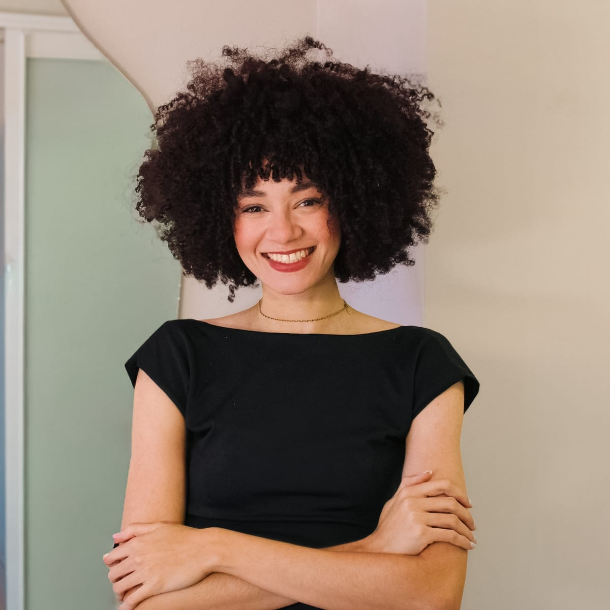

01Pré-wedding
01–03 / 06
Foto 01
Foto 02
Foto 03
Foto 04
Foto 05
Foto 06
Raquel Pimentel · Fotografia
Fotografias para guardar o que importa.
Trabalhos
Um pouco do que meu olhar encontra.
01–03 / 06
01–02 / 06
01–02 / 06
01–04 / 06
Por trás de cada imagem, existe um olhar.
Sobre Raquel

Sou Raquel Pimentel, fotógrafa. Entre retratos, casamentos e eventos, meu trabalho é criar imagens que ajudem você a guardar o que importa.
Da fotografia à edição, o cuidado está em cada escolha: a luz, o enquadramento e a forma de contar a sua história.
Momento que permanece.
Orçamento
Conte o que você imagina. Vamos conversar sobre as fotos do seu momento.
Solicitar orçamento